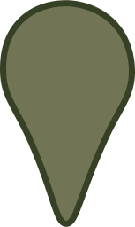

Locaties ruil boekenkasten Amsterdam
- Filip's Bieb | Nicolaas de Roeverstraat 1
- Het babyslaaphuisje | Twentestraat 12
- De boekenklok | Korenbloemstraat 4
- TeleBoomcel | Boomstraat 67
- De boomhut | Pasteurstraat 11
- De oase | Pieter van der Doesstraat 7
- Sterrenkijker | Sumatrakade 1155
- Het aquarium | Elisabeth Wolffstraat 82
- De boot | Meeuwenlaan 21
- Sint Joris en de draak | Zuideinde 361